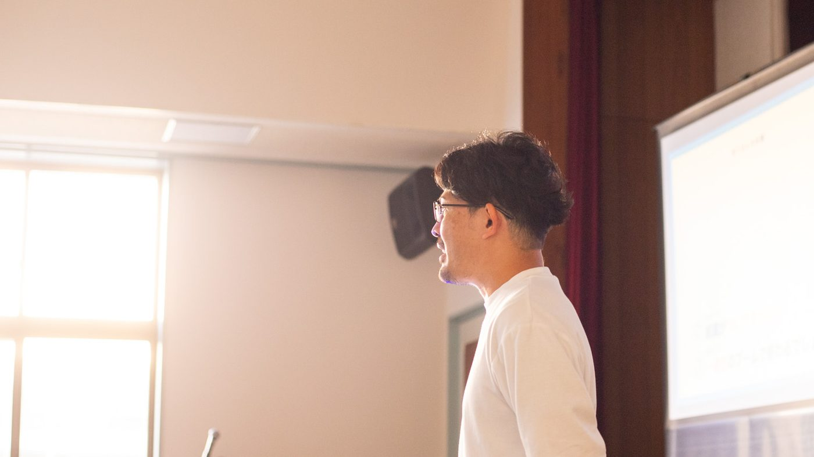

情報には、もう触れている
AIの話は毎日のように目に入ってきて、知識もたまってきている。その上に、実際にどんな画面で、どんな指示で動いているのかを見ると、つなげて考えやすくなります。
沖縄AIセミナー 第2回 昼の部
棚原のAI社員が働く画面を見ながら、安永智也さんが公開でアドバイスします。
10月26日（月）の午後、宜野湾で開く参加無料の会です。
棚原が、普段のAI社員の使い方、Claude Codeの使い方、自動化の動き方を実際の画面でお見せする予定です。例えば、AI社員によるLP作成や、名刺画像のスプレッドシートへの自動転記など（当日の状況により変わることがあります）。そして、すでに動いているものにもう一段を足すために、Anthropic公式アンバサダーの安永智也さんにアドバイスをもらいます。その様子を、そのままご覧いただく公開コンサルです。
こんな方に


AIの話は毎日のように目に入ってきて、知識もたまってきている。その上に、実際にどんな画面で、どんな指示で動いているのかを見ると、つなげて考えやすくなります。
名前を聞いて、気になっている方も多いと思います。その関心に、実際の画面で何をどう頼んでいるのかを重ねてみる時間をご用意しました。例えば、AI社員にLPの作成をお願いする流れなどをご覧いただく予定です（当日の状況により変わることがあります）。
すでにAIを実践している者同士が、一歩先を一緒に考える様子をご覧いただきます。棚原自身が、すでに動いている仕組みについて、安永さんに「もう一段」を相談します。その様子は、ご自身の場合を考えるヒントになります。
そこに加えて、実際に動いているところを見る時間と、公開コンサルの時間をご用意しました。

資料を整えた講義ではなく、棚原が普段使っている画面を開きながら、ざっくばらんにお話しする会です。
そのうえで、棚原のAI社員とClaude Codeの使い方について、安永智也さんからアドバイスをもらいます。すでに動いている仕組みに、もう一段を足すための相談です。
例として、次のようなものをお見せする予定です。当日の状況により、内容が変わることがあります。
75名のAI社員のうち、LPを作る専任が、どう指示を受けて、どんなふうに進めるかの流れ。
Claude Codeで、記事の下書きを自動で作る流れ。
サンプルの名刺で、読み込みから転記までの流れ。
サンプルで、お見せできるかもしれません。
あわせて、Claude Codeの使い方（実際の画面で、何をどう頼んでいるか）と、AI社員が動いている様子・自動化の考え方もお話しします。

棚原が「ここから、もう一段上げるには？」を安永さんに相談します。
Anthropic公式のClaudeコミュニティアンバサダーであり、5,000人以上にAIを指導してきた安永さんが、棚原の使い方を見てアドバイスします。

U-WAN代表／AI × 経営コンサルタント
今回、画面をお見せして、安永さんに相談する側です。

有料AIコミュニティ「SHIFT AI」の中核メンバーとして、これまでに5,000人以上にAIを指導してきた方です。
今回は、棚原のAI社員とClaude Codeの使い方について、公開でアドバイスをお話しいただきます。
昼の部の参加費は無料です。当日その場で、お支払いをお願いすることはありません。
はじめての方にも、画面を見ながら流れが追えるよう進めます。使ったことがある方は、ご自身の使い方と見比べる見方もできます。
その必要はありません。聞いているだけでも大丈夫です。
時間割は設けず、ざっくばらんに進めます。

| 日時 | 2026年10月26日（月）13:30〜16:00 |
|---|---|
| 会場 | 宜野湾ベイサイド情報センター（沖縄県宜野湾市） 地図を開く |
| 参加費 | 無料 |
| 登壇 | 棚原秀樹／安永智也さん（棚原への公開アドバイス） |
| 形式 | 会場参加のみ。オンライン配信はありません。途中でのご入退場はご遠慮いただいています |
| 定員 | 30名（先着順） |
同じ日の夜、同じ会場で「沖縄AIセミナー 第2回 夜の部」を開きます。
はい、昼の部の参加費は無料です。
棚原が普段のAI社員とClaude Codeの使い方をお見せし、安永智也さんからアドバイスをもらう様子を、その場でご覧いただく時間です。棚原は、すでに動いている仕組みに、さらにもう一段を足すための相談をします。参加者の方の個別相談の場ではありません。
今回は会場参加のみで、オンライン配信は行いません。
駐車場はありますが、台数に限りがあります。少し早めのご来場や公共交通機関のご利用もご検討ください。
昼の部は無料ですので、お手続きは不要です。ご都合が悪くなった方は、ご一報いただけると、お席を他の方にご案内できて助かります。
夜の部（開場18:00／18:30〜20:30）も、同じ会場で開きます。昼の部とは別のセミナーです。
途中でのご入退場はご遠慮いただいています。開始時刻までにお越しください。
普段の使い方を、そのままお見せします。そして、安永さんと一緒に、その「次の一段」を考えます。
ざっくばらんな会ですので、肩の力を抜いて来てください。定員は30名、先着順です。
追伸
このページを最後まで読んでくださって、ありがとうございます。
ご都合が合えば、10月26日の午後、宜野湾でお会いできたら嬉しいです。